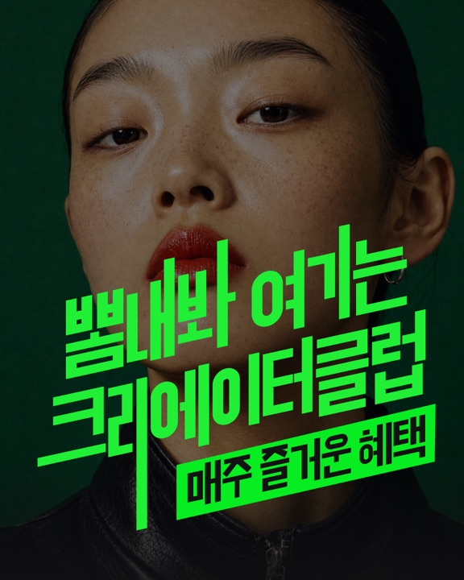

A안
C8c8.official···

♡ 💬 ➤1/4
피드에서 처음 보이는 앞 125자
c8.official 작품도, 프로필도 뽐내봐 🔥
크리에이터클럽 Weekly Best가 매주 월요일 새로 시작해요.
리스펙트를 많이 받은 작품, 활발하게 활동한 크리에이터를 부문별로 TOP 10까지 뽑아요.
자세한 혜택과 참여 방법은 프로필 링크… 더 보기
캡션 전체 보기 (노란 칸이 앞 125자)
c8.official 작품도, 프로필도 뽐내봐 🔥
크리에이터클럽 Weekly Best가 매주 월요일 새로 시작해요.
리스펙트를 많이 받은 작품, 활발하게 활동한 크리에이터를 부문별로 TOP 10까지 뽑아요.
자세한 혜택과 참여 방법은 프로필 링크에서 확인해 주세요.
#크리에이터클럽 #위클리베스트 #포트폴리오 #포폴 #포폴공유
B안
C8c8.official···
♡ 💬 ➤1/4
피드에서 처음 보이는 앞 125자
c8.official 작품도, 프로필도 뽐내봐 🔥
포트폴리오 앱 크리에이터클럽, 매주 월요일 Weekly Best가 새로 시작해요.
리스펙트 많이 받은 작품, 활발히 활동한 크리에이터를 부문별로 TOP 10까지 뽑아요.
참여는 프로필 링크에서!
… 더 보기
캡션 전체 보기 (노란 칸이 앞 125자)
c8.official 작품도, 프로필도 뽐내봐 🔥
포트폴리오 앱 크리에이터클럽, 매주 월요일 Weekly Best가 새로 시작해요.
리스펙트 많이 받은 작품, 활발히 활동한 크리에이터를 부문별로 TOP 10까지 뽑아요.
참여는 프로필 링크에서!
자세한 혜택도 링크 안에 다 있어요.
#크리에이터클럽 #위클리베스트 #포트폴리오 #포폴 #포폴공유